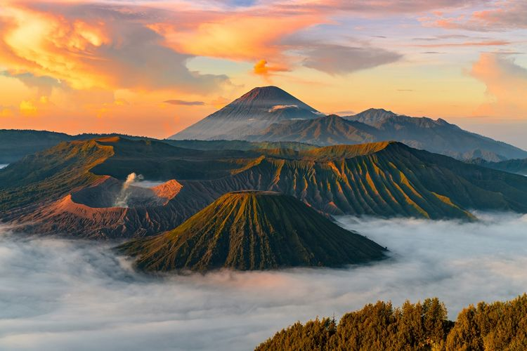
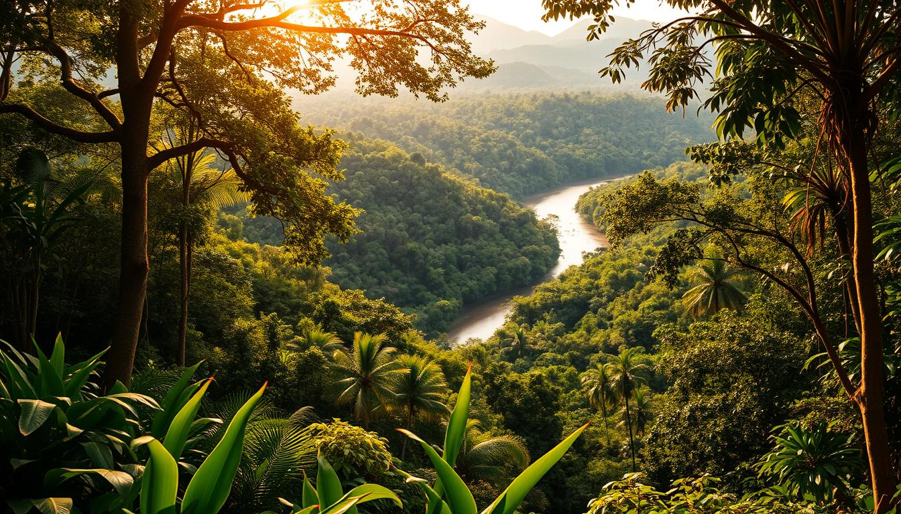

Selamat Datang di Explore Alam Indonesia

Indonesia dikenal sebagai salah satu negara dengan kekayaan alam terbesar di dunia. Dari Sabang sampai Merauke, setiap wilayah memiliki keindahan yang unik dan tidak ditemukan di negara lain. Bentang alam Indonesia menawarkan gunung yang megah, pantai berpasir putih, hutan hujan tropis yang lebat, hingga danau jernih yang menenangkan. Dengan keragaman alam sebesar ini, Indonesia menjadi destinasi impian wisatawan lokal maupun mancanegara.
Pesona alam Indonesia lahir dari kondisi geografisnya yang terletak di jalur Cincin Api Pasifik. Hal ini membuat Indonesia memiliki banyak gunung berapi aktif yang tidak hanya menantang untuk didaki namun juga menyimpan pemandangan alam luar biasa. Sebagai negara kepulauan dengan lebih dari 17.000 pulau, Indonesia juga sangat kaya akan pantai dan kehidupan laut yang berwarna-warni.
Keindahan alam Indonesia tidak hanya sekadar pemandangan, tetapi juga menjadi bagian penting dari kehidupan masyarakat. Banyak masyarakat lokal yang masih hidup berdampingan dengan alam dan bergantung padanya sebagai sumber penghidupan. Mulai dari masyarakat adat di Papua, suku Dayak di Kalimantan, hingga masyarakat desa di Jawa, semuanya menunjukkan betapa pentingnya alam dalam kehidupan mereka.
Beberapa tahun terakhir minat wisata alam semakin meningkat. Banyak wisatawan yang mencari pengalaman yang lebih autentik dan menenangkan. Alam menawarkan ketenangan yang sulit ditemukan di perkotaan. Banyak orang merasa bahwa berada di alam membantu meredakan stres, memperbaiki suasana hati, serta memberikan perspektif baru.
Akses menuju berbagai destinasi alam kini semakin mudah. Infrastruktur, transportasi, hingga fasilitas wisata telah berkembang pesat. Pemerintah juga tengah mendorong wisata yang berkelanjutan agar keindahan alam tetap terjaga meski dikunjungi banyak wisatawan. Pendekatan ini penting agar generasi mendatang tetap bisa menikmati keindahan alam Nusantara.
Wisata alam membuka banyak lapangan kerja bagi masyarakat setempat. Banyak warga yang kini bekerja sebagai pemandu wisata, pengelola homestay, penyedia transportasi lokal, hingga pedagang kuliner khas daerah. Industri ini terbukti mampu meningkatkan ekonomi lokal tanpa merusak lingkungan jika dikelola dengan bijak.
Di halaman ini, kamu akan diajak menjelajahi tiga jenis wisata alam utama di Indonesia: wisata gunung, pantai, dan hutan. Setiap kategori memiliki pesona dan daya tarik yang membuat Indonesia menjadi surga pecinta alam. Semoga halaman ini membuat kita lebih mencintai dan menjaga alam Indonesia.
Wisata Gunung Indonesia

Gunung di Indonesia tidak hanya menjadi tujuan para pendaki, tetapi juga merupakan simbol kekuatan alam. Banyak gunung memiliki keunikan tersendiri dari segi bentuk, ekosistem, hingga cerita budaya yang berkembang di sekitarnya. Contohnya Gunung Bromo di Jawa Timur yang terkenal dengan lautan pasir serta sunrise yang luar biasa.
Gunung Rinjani di Lombok juga merupakan magnet bagi pecinta pendakian. Dengan ketinggian lebih dari 3.700 mdpl, Rinjani menawarkan rute pendakian menantang yang disertai pemandangan menakjubkan. Di tengah kawahnya terdapat Danau Segara Anak yang sangat indah sehingga menjadi tempat favorit para pendaki.
Gunung Gede Pangrango di Jawa Barat termasuk salah satu gunung paling populer untuk pendakian. Gunung ini memiliki ekosistem kaya dengan beragam flora dan fauna endemik. Jalurnya terawat baik sehingga cocok bagi pendaki pemula dan profesional.
Gunung Semeru, gunung tertinggi di Pulau Jawa, dikenal dengan kawah Jonggring Saloko yang mengeluarkan letusan kecil setiap beberapa menit. Pendaki biasanya berkemah di Ranu Kumbolo, danau jernih di tengah pegunungan yang terkenal dengan keindahannya.
Bagi masyarakat lokal, gunung memiliki nilai spiritual. Banyak ritual dilakukan di lereng atau puncak gunung sebagai bentuk penghormatan terhadap alam. Ini menunjukkan bahwa gunung bukan sekadar objek wisata, tetapi juga bagian budaya penting.
Mendaki gunung tidak hanya perjalanan fisik, tetapi juga perjalanan batin. Banyak orang merasa lebih mengenal diri sendiri setelah berada di alam bebas. Keindahan dan ketenangan pegunungan mampu memberikan energi baru bagi siapa pun yang mengunjunginya.
Pantai-Pantai Terindah di Indonesia

Indonesia memiliki deretan pantai yang sangat beragam, mulai dari pasir putih, pasir hitam vulkanik, hingga pantai berwarna pink yang langka. Pantai Pink di Lombok adalah salah satu pantai berpasir merah muda yang sangat jarang ditemukan di dunia sehingga menjadi daya tarik wisatawan.
Bali terkenal dengan pantai-pantainya seperti Kuta, Legian, dan Sanur yang selalu ramai dikunjungi wisatawan. Pantai-pantai ini tidak hanya menawarkan keindahan laut biru, tetapi juga fasilitas lengkap mulai dari restoran, hotel, hingga lokasi belajar surfing.
Nusa Penida memiliki pantai ikonik seperti Kelingking Beach yang berbentuk mirip dinosaurus T-Rex. Airnya yang sangat jernih cocok untuk snorkeling dan diving. Banyak wisatawan datang untuk melihat manta ray, ikan pari raksasa yang hidup di perairan sekitar pulau ini.
Raja Ampat di Papua Barat adalah surga bagi pecinta bawah laut. Terumbu karang di sini merupakan salah satu yang paling sehat di dunia. Dengan air yang jernih, wisatawan dapat menikmati pesona bawah laut hanya dengan snorkeling.
Pantai di Indonesia juga menjadi tempat aktivitas masyarakat setempat seperti nelayan mencari ikan dan pedagang makanan khas. Aktivitas ini memberikan nuansa khas yang membuat pantai Indonesia lebih hidup dan menarik.
Bagi banyak orang, pantai adalah tempat terbaik untuk healing. Suara deburan ombak dan semilir angin laut mampu memberikan ketenangan dan mengurangi stres setelah menjalani rutinitas.
Keindahan Hutan Tropis Indonesia

Hutan hujan tropis Indonesia merupakan salah satu yang terkaya di dunia. Ribuan spesies flora dan fauna hidup di dalamnya. Kalimantan dikenal sebagai paru-paru dunia karena memiliki kawasan hutan yang sangat luas.
Taman Nasional Gunung Leuser di Sumatera adalah habitat bagi orangutan Sumatera dan menjadi kawasan konservasi penting. Ekosistemnya sangat kompleks sehingga menjadi tujuan wisata edukatif bagi pecinta lingkungan.
Hutan Papua termasuk salah satu hutan yang paling alami. Banyak wilayah yang belum tersentuh manusia sehingga ekosistemnya tetap terjaga. Masyarakat adat Papua masih bergantung pada hutan sebagai sumber pangan, obat, dan budaya.
Hutan berperan penting menjaga iklim dunia karena pohon menyerap karbon dioksida dan menghasilkan oksigen. Oleh karena itu, keberadaan hutan harus dijaga demi kelangsungan hidup manusia.
Trekking di dalam hutan memberikan pengalaman yang berbeda. Suara burung, sungai kecil, dan udara sejuk memberikan ketenangan batin yang tidak ditemukan di kota besar.
Dengan meningkatnya kesadaran lingkungan, berbagai kegiatan wisata hutan kini menerapkan konsep ekowisata untuk memastikan hutan tetap terjaga untuk generasi mendatang.